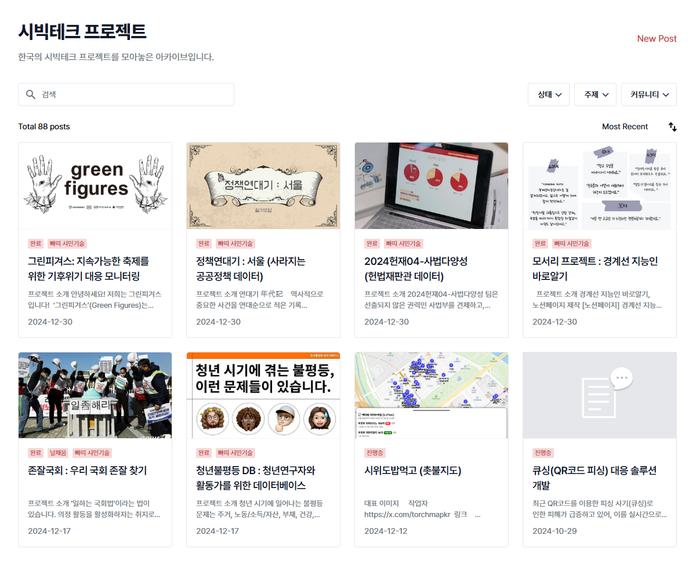
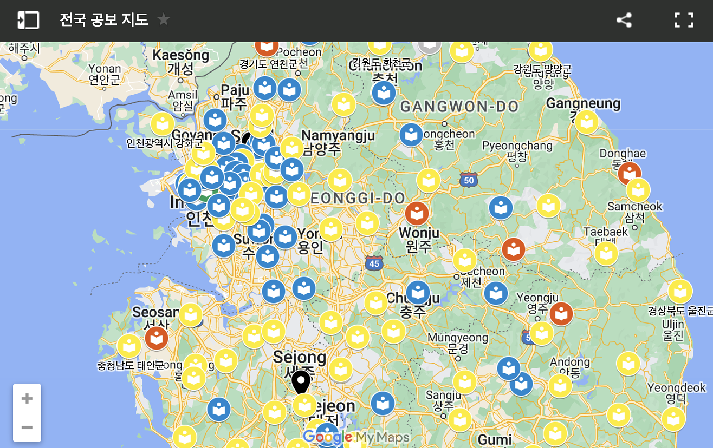
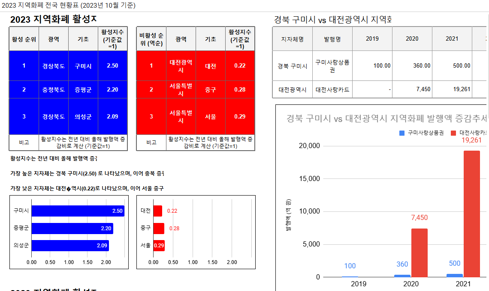
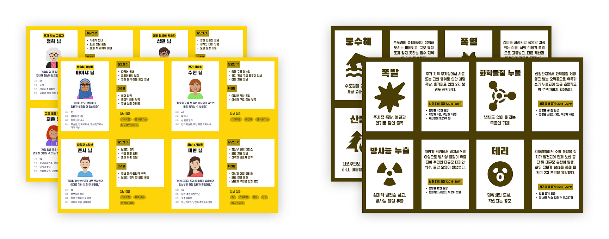

Code for Korea is a civic tech network building a safer and more trustworthy society through civic hacking and open data.
A citizen community in South Korea dedicated to civic hacking and open data for the public good.
The General Assembly, which convenes with a majority of registered members present, serves as the highest decision-making body. Organizers hold biweekly meetings to discuss and decide on key issues, and all participate on a voluntary basis.
Developers, designers, planners, researchers, journalists, activists, public officials, and students come together to make better society.
To empower citizens to directly identify social problems and create solutions through technology and collaboration
Open source, voluntary participation, project-based collaboration, and community governance
Civic hacking is not just about coding.
It is a civic practice of identifying problems, reading data, connecting people, and building better solutions together.
Find the real social problems that citizens face.
Examine public data and on-the-ground information together.
Build web services, maps, data visualizations, and more.
Share openly so anyone can participate and improve.
Broaden possibilities together with citizens, experts, and institutions.
Code for Korea creates spaces for citizens to meet, collaborate, and continue projects through Meet & Hack, Facing the Ocean, and the Civic Tech Conference.
An event where citizens meet to explore social problems and build solutions together
Format: Hackathon, workshop, networking, collaborative project work
Feature: Low barrier to entry and a culture of collaboration
An international network connecting civic hacking communities across Asia
Participants: Korea, Taiwan, Japan, and more
Culture: No competition, no prizes — an event built together by all
A gathering to share civic tech projects and social issues
Format: Presentations, talks, networking
Goal: Share outcomes and challenges, and open new possibilities for collaboration
Code for Korea has a history of projects where citizens identify social problems, collect data, and build tools that anyone can use.




Code for Korea projects don't start with a finished answer.
They begin where citizens' questions, open data, and diverse expertise meet.
Citizens surface inconveniences, information gaps, and public issues they encounter in daily life.
We collect evidence through public data, FOIA requests, field research, and citizen input.
Developers, designers, planners, researchers, and activists read the problem through their own lens.
We create maps, websites, data visualizations, archives, and guides that citizens can actually use.
We publish our work, gather feedback, and carry it forward into the next activity.
We are a sustainable community, not just an event organizer.
Citizens who face the problems themselves ask questions and participate directly.
We publish our work openly so anyone can improve it.
Not just developers — experts from all fields work together.
There are many ways to get involved: events, online, and projects.
We think together about how technology can contribute to society.
Building on our newly established direction and governance, Code for Korea aims to improve both the quantity and quality of our activities.
Establishing a more transparent decision-making structure through full membership and general assembly operations
Expanding the Asian civic hacking network with youth participation at its center
Supporting project teams so ideas actually turn into results
Documenting the outcomes and lessons of civic technology
Sharing the results and learnings from projects conducted throughout the year
Lower the barrier to entry while raising the quality of ideas produced